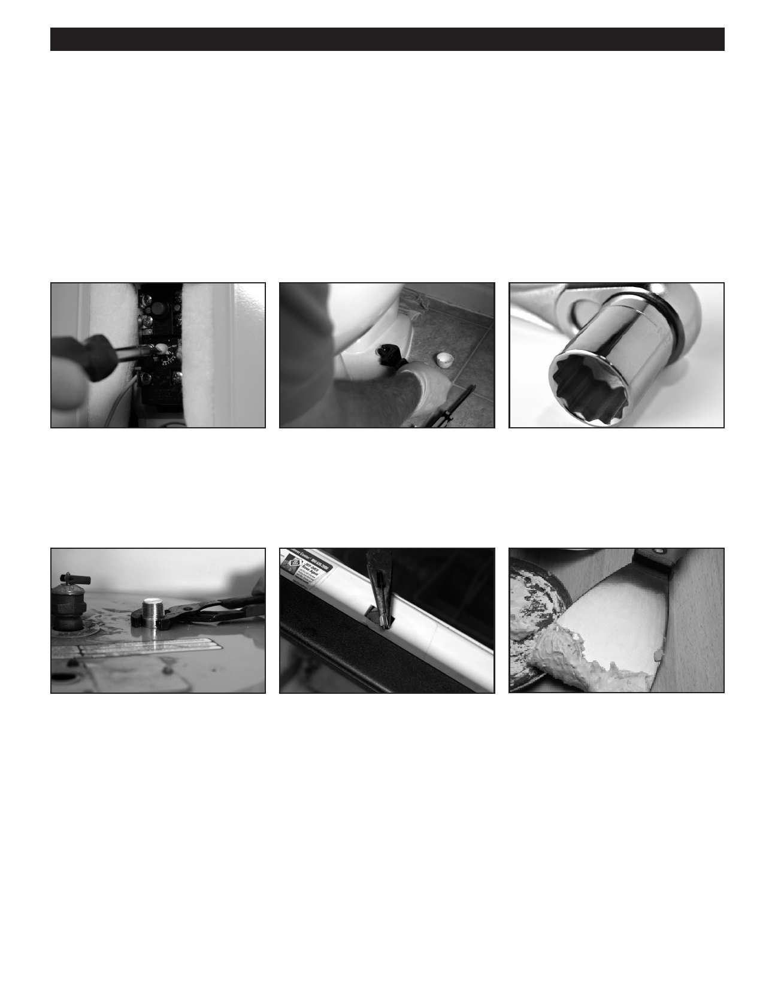

PA RT I C I PA N T R E S O U R C E G U I D E
Key Tools for Plumbing Repairs
You can complete many plumbing maintenance and repair tasks with the basic hand
tools you probably already have.
Adding a few specialty tools, however, will prepare you for almost anything you
may encounter.
The Basic Hand Tools
Slotted and Phillips screwdrivers
An adjustable wrench has a movable A ratchet wrench has interchangeable
can help you with many a plumbing
jaw that lets you fit the wrench to many sockets to fit various sizes of nuts and
repair task.
sizes of nuts and bolts.
bolts. You use it to tighten and loosen
these nuts and bolts.
A tongue and groove pliers has a
A needlenose pliers has thin jaws for
A putty knife will help you scrape away
movable handle that lets you adjust the grabbing small things.
old putty, caulk, or wax from fixtures.
jaws for maximum gripping strength.
9